Skica User Guide
A fast, keyboard-first design app for macOS. Every tool, property and layer is a few keys away, and the mouse works the way it does in Sketch or Figma.
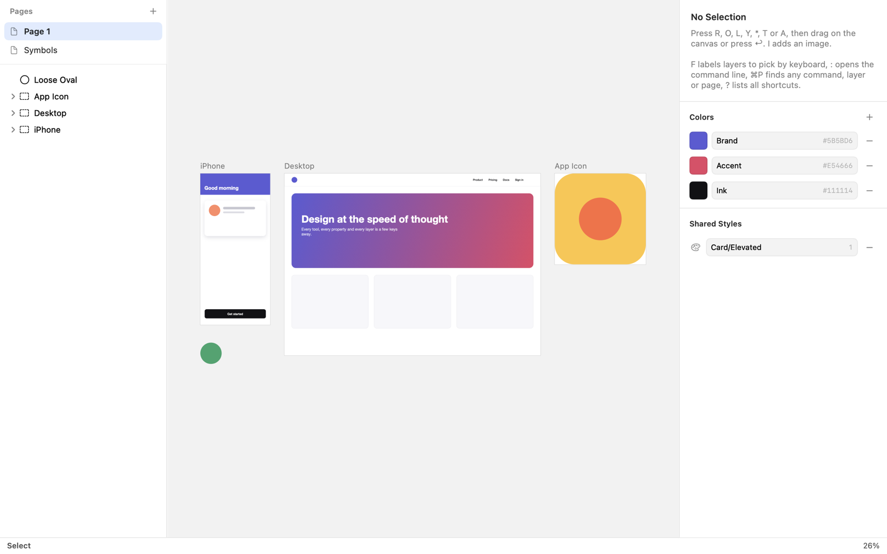
1. Getting started
Install
Skica needs macOS 14 Sonoma or later on Apple silicon. Install it with Homebrew:
brew tap aleksandargosevski/tap
brew trust aleksandargosevski/tap
brew install skica
ln -sfn "$(brew --prefix)/opt/skica/Skica.app" /Applications/Skica.appThe link puts Skica in Applications, so Spotlight, Raycast and the Dock find it, and it keeps pointing at
the newest version after brew upgrade. The formula also installs the skica command.
Open Skica once so Finder shows previews of .skica files.
First steps
- Choose Help → New Sample Document to get a file with artboards, a symbol, colors and a shared style to try things on.
- Press R and drag on the canvas to draw a rectangle, or press R then ↩ to add one in the middle of the view and type its size.
- Press : and type
fill #ff6600; r 12to color it and round its corners. - Press ⌘P to find any command, layer or page by name, and ? to see every shortcut.
- Press ⌘⇧E to export the selection as a PNG.
The status bar at the bottom always shows the current mode and the keys that work in it. When in doubt, look down.
2. The window
The window has three columns and a status bar:
- Layers (left)
- The pages of the document at the top and the layers of the current page below, topmost first. Click to select, ⇧-click to add, double-click or ↩ to rename. Drag rows to change the order, or drop them on a group or artboard to move them inside; layers keep their place on the canvas.
- Canvas (middle)
- The current page. Scroll to pan; pinch, or scroll with ⌘ or ⌥, to zoom; double-tap with two fingers to switch between 100% and the whole page; hold space and drag to pan.
- Inspector (right)
- The properties of the selection. With nothing selected it shows the document's color palette and shared styles.
- Status bar (bottom)
- The current tool or mode with its keys, the selection's size and position, the pointer position, the zoom, and the prompt or command line when one is open.
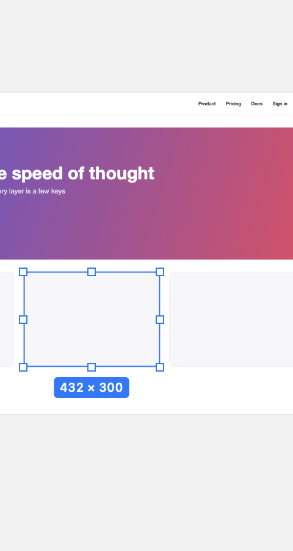
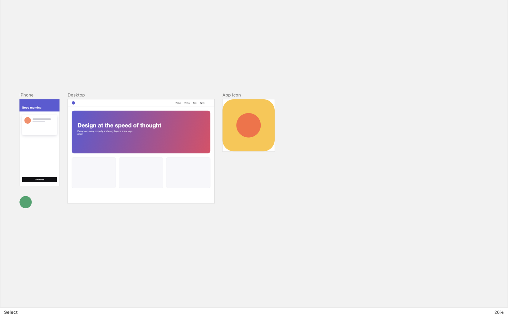
Resize the columns by dragging the thin dividers between them. Each panel can be as wide as half the window;
the widths are remembered for every window. ⌘⌥1 shows or hides the layers, ⌘⌥2 the inspector,
and g l / g i move the keyboard focus to them (inspector fields accept arithmetic such as
100/3 or +20; ↑/↓ step by 1, with ⇧ by 10; esc returns to the canvas).
3. Working from the keyboard
Everything in Skica can be done without the mouse. These are the pieces that make it work.
Single keys and sequences
Tools are single letters (R rectangle, T text…). Some commands are two-key sequences typed one after the other, like g p (go to page). Shortcuts follow the position of keys, so they work the same with a Serbian Cyrillic or any other keyboard layout.
The command palette
⌘P searches every command, layer and page by fuzzy name: expsel finds “Export Selection…”, a layer name
selects that layer. ⌘K shows only the actions for the current selection, and ? lists all shortcuts.
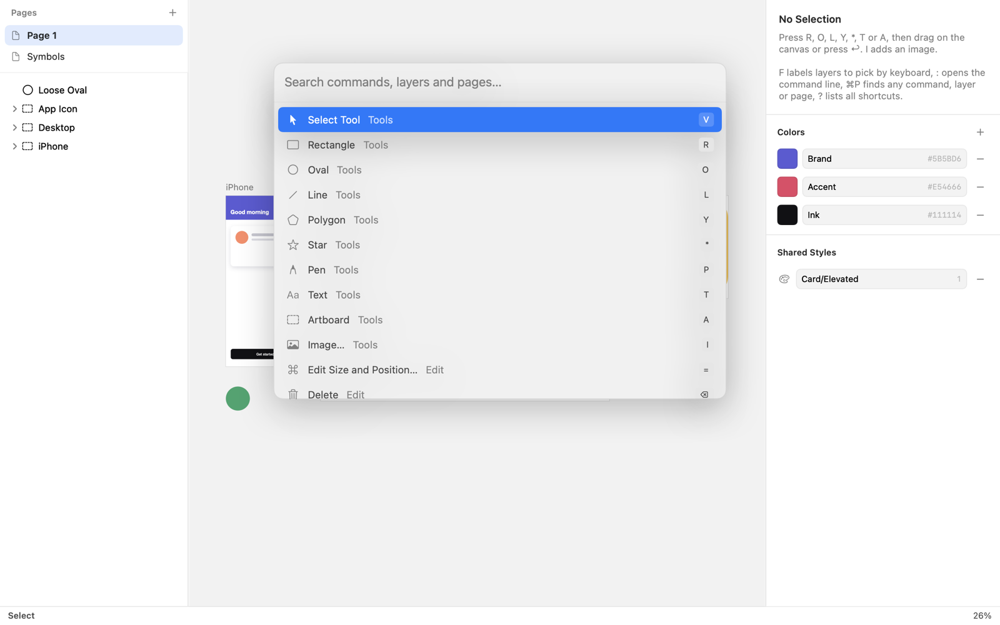
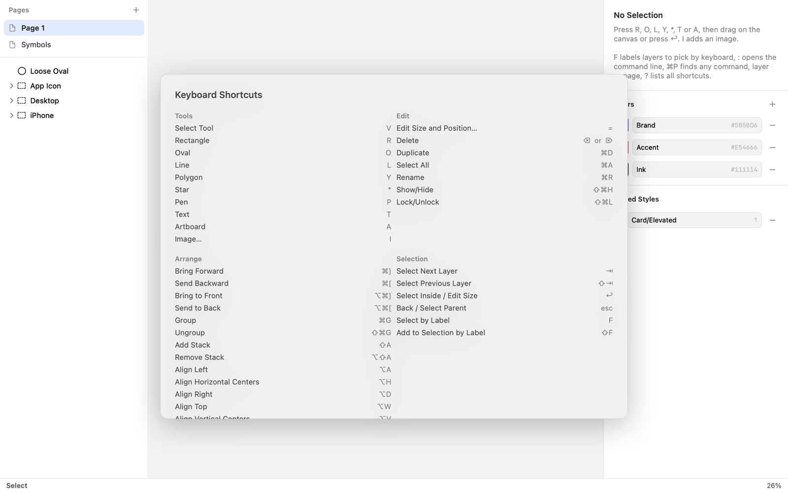
Picking layers with hints
Press F and every visible layer gets a short label; type the label to select that layer (like Vimium in a browser). ⇧F adds the picked layer to the selection.
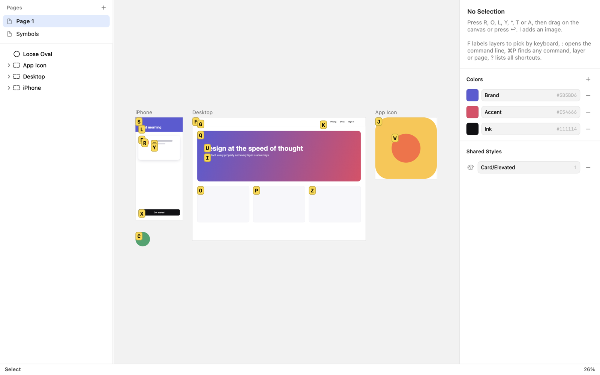
Moving through the layer tree
| ⇥ / ⇧⇥ | Next / previous layer next to the selected one |
| ↩ | Into the selected group or artboard (its first child); on text, edit it |
| esc | Up to the parent, then deselect |
| ⌘A | Select all layers next to the selected one (everything on the page when nothing is selected) |
Size and position prompt
Press = (or ↩ right after drawing a shape) to type its frame. Values may be arithmetic, and
+, -, * or / at the start change the current value:
200x120 | Width 200, height 120 |
200x120 @ 40,80 | Size and position |
@ 40,80 | Position only |
150 | A 150 × 150 square |
x60 | Height only |
+20x, *2x | 20 wider, twice as wide |
iphone, a4 | An artboard preset by (fuzzy) name |
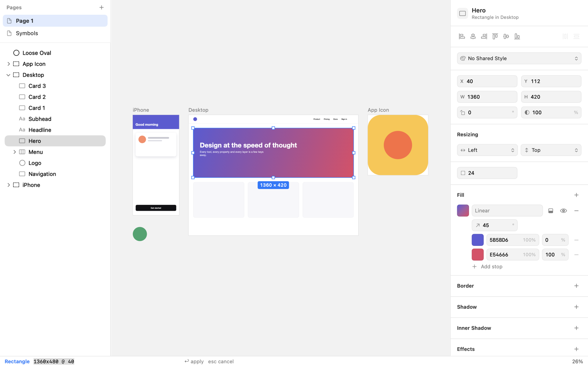
The command line
: opens a command line that changes the selection in words: w 200; fill #ff6600; border 2 #000 inside.
Commands are separated by ;, numbers can be relative (w +20, h *2), colors can name palette
swatches (fill $brand). . repeats the last command line on the new selection. See the
command line reference for every command.
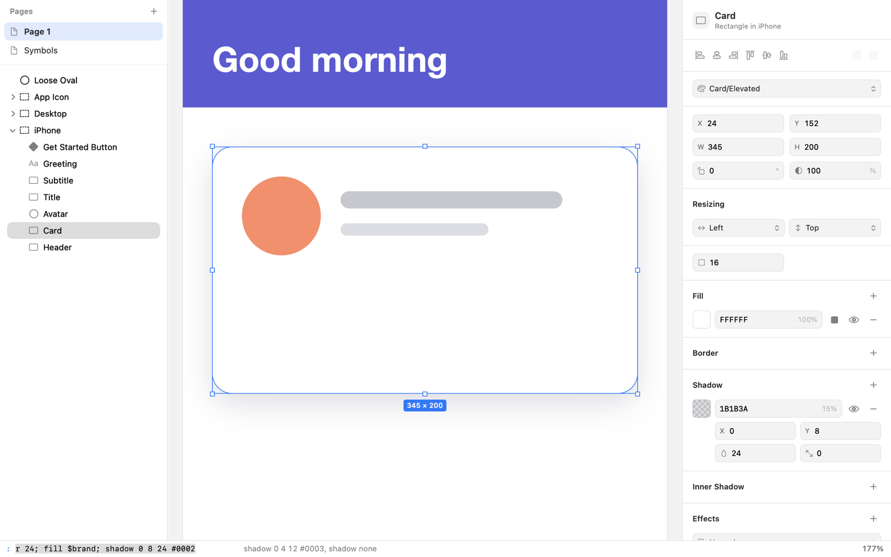
Nudging and resizing
| Arrows (⇧ ×10) | Move the selection; pan the canvas when nothing is selected |
| ⌘ + arrows | Resize from the right / bottom edge |
| ⌘⌥ + arrows | Resize from the left / top edge |
4. Shapes and artboards
Pick a tool and drag on the canvas, or press ↩ to add the shape at a default size in the middle of the view and open the size prompt.
| R | Rectangle (corner radius in the inspector or :r 8) |
| O | Oval |
| L | Line |
| Y | Polygon (number of sides in the inspector) |
| * | Star (points and inner radius in the inspector) |
| P | Pen, see Paths |
| T | Text |
| A | Artboard |
| I | Image or SVG file |
While dragging: ⇧ makes squares, circles and 45° lines, ⌥ draws from the center, and ⌃ turns snapping off. Smart guides snap to the edges and centers of nearby layers and the artboard.
Artboards are top-level frames that clip their contents. Shapes drawn or dropped on an artboard go inside it. Type a preset name in the size prompt for common sizes: iPhone 16, iPhone 16 Pro Max, iPhone SE, Android, iPad, iPad Pro 13, Apple Watch, MacBook Air, MacBook Pro 14, Desktop, Desktop HD, A4, Letter, Instagram Post, Instagram Story, X Post, YouTube Thumbnail and App Icon.
5. Selecting and arranging
- Click selects the top-level layer under the pointer (a group as a whole); ⌘-click selects the deepest layer; double-click goes into a group.
- ⇧-click adds or removes a layer; drag on empty canvas for a marquee.
- Drag the eight handles to resize: ⇧ keeps the proportions, ⌥ resizes from the center.
- ⌘G groups, ⌘⇧G ungroups. Resizing a group scales its contents.
- ⌘] / ⌘[ move a layer forward / backward, with ⌥ to the front / back. In the layers list, drag rows.
- ⌘D duplicates, ⌫ deletes, ⌘C ⌘X ⌘V copy, cut and paste (also between documents).
- ⌘⇧H hides, ⌘⇧L locks, ⌘R renames.
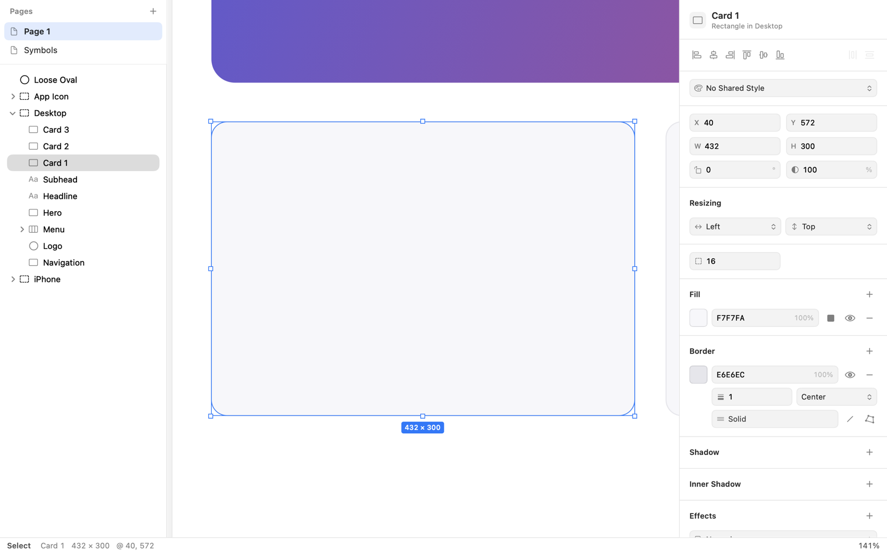
6. Fills, borders and effects
The inspector edits position, size, rotation, opacity and corner radius at the top, then:
- Fill
- Any number of fills: solid colors or linear and radial gradients with their own stops. Click a swatch for the color panel; type hex values directly.
- Border
- Width, color, position (inside, center, outside), dashes, caps and joins.
- Shadow and Inner Shadow
- Offset, blur, spread and color; several can be stacked.
- Effects
- Layer blur and blend mode (multiply, screen, overlay…).
- Export
- Export sizes and formats for the layer, see Export.
Every field takes arithmetic: 320/3, +16, *1.5. With several layers selected, a field shows
Mixed and typing a value sets it on all of them.
The same properties can be typed on the command line: fill #f60, border 2 #000 inside,
shadow 0 4 12 #0003, blur 8, blend multiply, op 50, r 12, rot 45.
7. Text
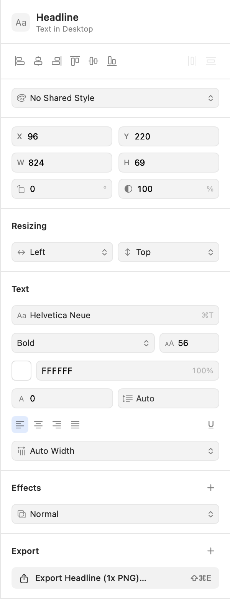
Press T and click to type, or drag to make a text box of a fixed width. Double-click or ↩ on a text layer edits it; esc ends editing.
- Styles apply to the selected characters while typing, or to whole layers otherwise: ⌘B bold, ⌘I italic, ⌘U underline, ⌘T the font panel.
- The inspector sets font family, weight, size, color, letter spacing, line height and alignment.
- Auto Width grows with the text, Auto Height wraps at a fixed width, Fixed Size keeps both.
- Command line:
font Inter 16 600,font bold,fs 18,color #333. - ⌘⇧O turns text into vector outlines.
8. Images and cropping
Add images with I, by dragging files onto the canvas, or by pasting. Large images are scaled to fit the artboard they land on; Original Size in the inspector restores their natural size. SVG files become editable layers instead of pictures, see Import.
Cropping
Double-click an image, press E or click Crop in the inspector. The status bar shows Crop:
- Drag the edges and corners to crop; the picture stays where it is (⇧ keeps the proportions, ⌥ crops from the center).
- Drag inside the image, or use the arrow keys, to slide the picture under the crop.
- The hidden parts show faintly with a dashed outline while cropping.
- esc or ↩ finishes. The whole crop is one undo step. Reset Crop shows the whole image again.
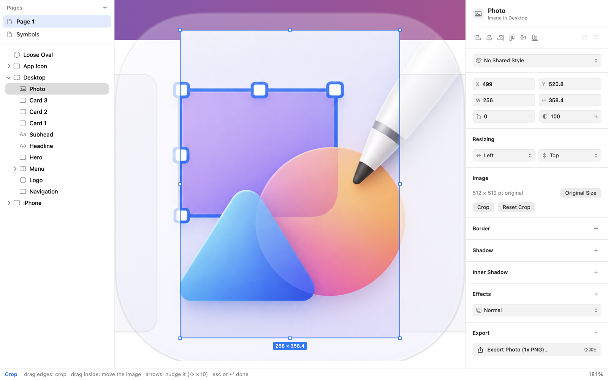
9. Paths, booleans and masks
The pen
Press P. Click to add corner points, drag to add curve points, click the first point to close the path, ↩ or esc to finish it open, ⌫ to remove the last point, ⇧ for 45° angles.
A straight line after a curve: click the last point again. That removes its outgoing handle, so the next segment is straight. To make a sharp turn between two curves, ⌥-drag (or drag from the last point): only the outgoing handle moves.
Editing points
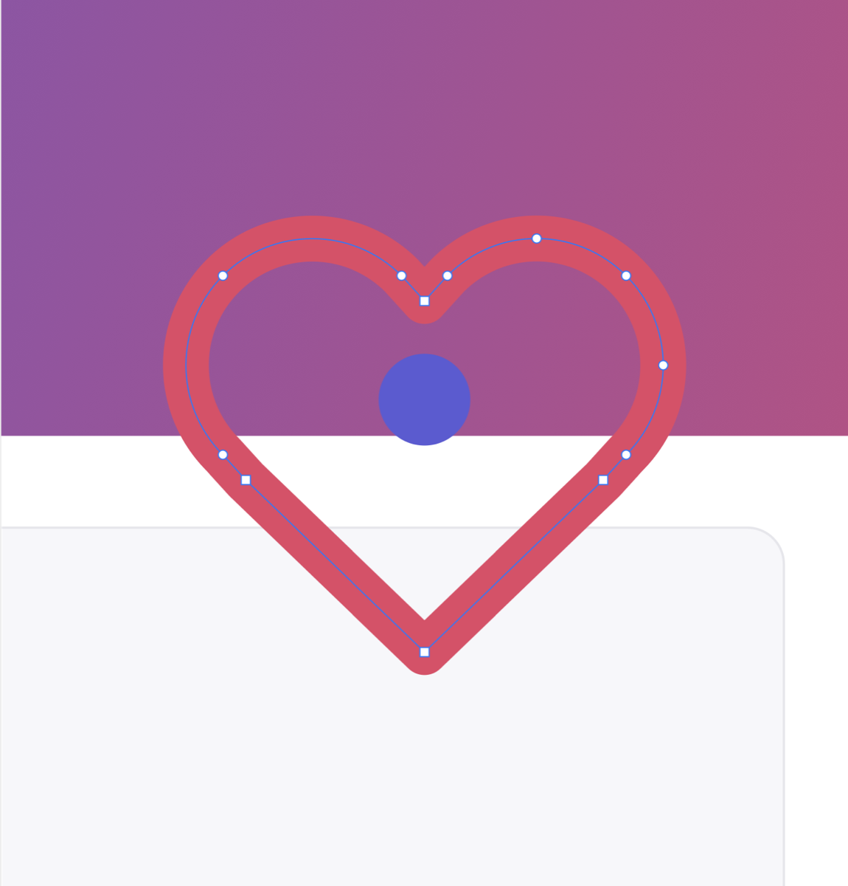
Double-click a shape or press E (shapes become paths first).
| ⇥ / ⇧⇥ | Next / previous point |
| Arrows | Move the selected points |
| 1–4 | Straight, mirrored, asymmetric, disconnected |
| ⌫ | Delete the selected points |
| Click a segment | Add a point there |
| esc | Done |
Combining shapes
| ⌘⌥U ⌘⌥S ⌘⌥I ⌘⌥X | Union, subtract, intersect, difference |
| ⌃⌘M | Mask: the bottom selected layer clips the layers above it (one layer: toggle) |
| ⌘⇧O | Convert to paths (text to outlines) |
| ⌘⌥O | Outline stroke: turn a border into a filled shape |
10. Symbols, shared styles and colors
Symbols
⌥⌘K turns the selection into a symbol. Its master moves to the Symbols page and an instance takes its place. A single artboard becomes a symbol where it is.
- Edit the master and every instance follows.
- S inserts a symbol, picked from a searchable list.
- In an instance, the inspector's Overrides change texts, colors, nested symbols and visibility for that instance only.
- g s or a double-click goes to the master; ⌥⌘B detaches an instance into a plain group.
- Resizing an instance lays out the master's layers by their constraints: a wider button keeps its label size.
- Deleting a master turns its instances into groups; copying an instance into another document brings its master along.
Shared styles and the color palette
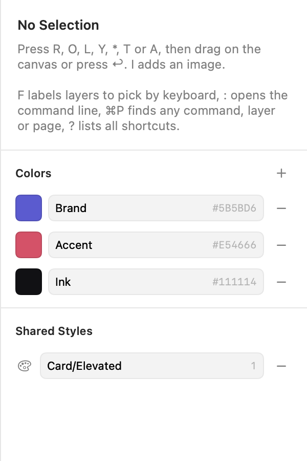
The style menu at the top of the inspector creates a shared style from a layer and applies existing ones (⌘⇧Y). When a linked layer is changed by hand it shows modified, with Update Style from Layer (changes every layer using the style) and Reset to Style. Text layers get text styles: font, size, color, spacing and alignment.
With nothing selected, the inspector shows the document's colors and shared styles. Add colors with + or
Symbols → Add Color to Palette; rename them in place. C applies a palette color to the selection, and the
command line takes $name wherever a color goes: fill $brand, border 2 $ink.
11. Layout: align, constraints and stacks
Align and distribute
The row at the top of the inspector aligns the selected layers to each other; a single layer aligns to its artboard.
| ⌥A ⌥H ⌥D | Align left, horizontal centers, right |
| ⌥W ⌥V ⌥S | Align top, vertical centers, bottom |
| ⌃⌥H ⌃⌥V | Distribute evenly (three or more layers) |
Spacing: the ↔ and ↕ fields show the gap between the selected layers when it is the same everywhere. Type a number to
line them up exactly that far apart, starting from the first one; this works with two layers too.
Command line: distribute h 16, align center.
Constraints (Resizing)
For layers inside an artboard or symbol, the Resizing section says how a layer follows when its parent changes size:
Left, Right, Left & Right (stretch), Center or Scale, and the same vertically.
Command line: pin left right, pin bottom, pin hcenter vscale.
Stacks (auto layout)
⇧A puts the selected layers in a stack: a row or column with a gap, padding and alignment, picked from how they are arranged. A selected group or artboard becomes a stack itself. ⌥⇧A removes the stack.
- Hug sizes the stack to its contents; Fixed keeps its size.
- Reordering layers reorders the stack, and text that grows pushes its neighbours.
- Command line:
stack h 8 12 center(direction, gap, padding, alignment),stack v 16 fixed,stack off,gap 12,pad 8 16.
12. Pages
| ⌘⌥N | New page |
| fn↓ / fn↑ | Next / previous page |
| g p | Go to a page by name |
| g m | Move the selection to another page |
Double-click a page in the list to rename it. Each page remembers where you were looking.
13. Command line reference
Press :, type one or more commands separated by ; and press ↩. Commands apply to every selected layer;
numbers like +20 or *2 change each layer's own value. . repeats the last line.
| Command | Examples | What it does |
|---|---|---|
x y w h | x 100, w +20, h *2 | Position and size |
size, pos | size 200x120 @ 40,80, size iphone, pos 0,0 | Frame, as in the size prompt |
r | r 8 | Corner radius |
rot | rot 45 | Rotation in degrees |
op | op 50 | Opacity in percent |
fill | fill #ff6600, fill $brand, fill none | First fill |
border | border 2 #000 inside, border none | Border width, color and position |
shadow | shadow 0 4 12 #0003, shadow 0 8 24 4 $ink | Drop shadow: x y blur [spread] [color] |
blur | blur 8, blur none | Layer blur |
blend | blend multiply | Blend mode |
name | name Header | Rename |
font | font Inter 16 600, font bold, font 18 | Font family, size and weight |
fs, color | fs 18, color #333 | Font size, text color |
align | align left, center, right, top, middle, bottom | Align the selection |
distribute | distribute h, distribute v 16 | Even spacing, or an exact gap |
style | style Card | Apply a shared style |
stack | stack h 8 16 center, stack v 12 fixed, stack off | Stack layout |
gap, pad | gap 12, pad 8 16, pad 8 16 4 16 | Stack gap and padding (CSS order) |
pin | pin left right, pin bottom, pin hcenter vscale | Constraints |
hide show lock unlock | Visibility and locking | |
group ungroup duplicate delete | The same as their shortcuts | |
front back forward backward | Layer order | |
bool | bool union, subtract, intersect, difference | Combine shapes |
mask flatten outline | Mask, convert to paths, outline stroke |
14. Export
Give a layer export sizes in the inspector's Export section: 1x, 2x, 512w or 300h,
each with a suffix and a format: PNG, JPG, WebP, HEIC, AVIF, PDF or SVG.
| ⌘⇧E | Export the selection (layers without sizes as a 1x PNG) |
| ⌘⌥⇧E | Export every layer marked for export |
| ⌘⇧C | Copy the selection as a 2x PNG |
| ⌘⌥⇧C | Copy the selection as SVG |
Export → Export Page as PDF… writes the page's artboards as pages of one PDF; shapes and text stay vectors.
Layer names with / become folders: Icons/Home exports as Icons/Home@2x.png.
SVG export writes real rect, ellipse, path and text elements with gradients, clip paths,
masks and filters for shadows and blur.
15. Import: SVG, Sketch and Figma
SVG
Paste SVG (copied as an image, or as markup from a code editor, a website or Figma's Copy as SVG), drop .svg files on the
canvas, or add them with I. They arrive as editable groups of shapes, paths and text. Opening a .svg file puts it on an
artboard of its size. Gradients, strokes, opacity, CSS classes, transforms and <use> come along; clip paths, masks, filters and
patterns are skipped.
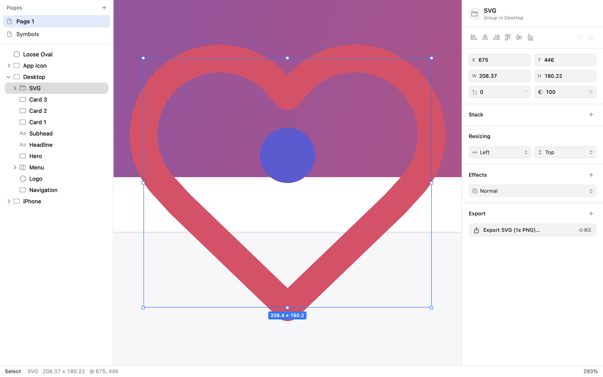
Sketch
Open .sketch files with ⌘O, a double-click in Finder or by dropping them on the Dock icon. The file opens as a new, unsaved
Skica document; the Sketch file itself is never changed. Pages, artboards and Sketch 2025 frames, groups, shapes, boolean shape groups,
text with its styles, images, symbols with overrides, shared styles, colors, constraints and export presets are kept.
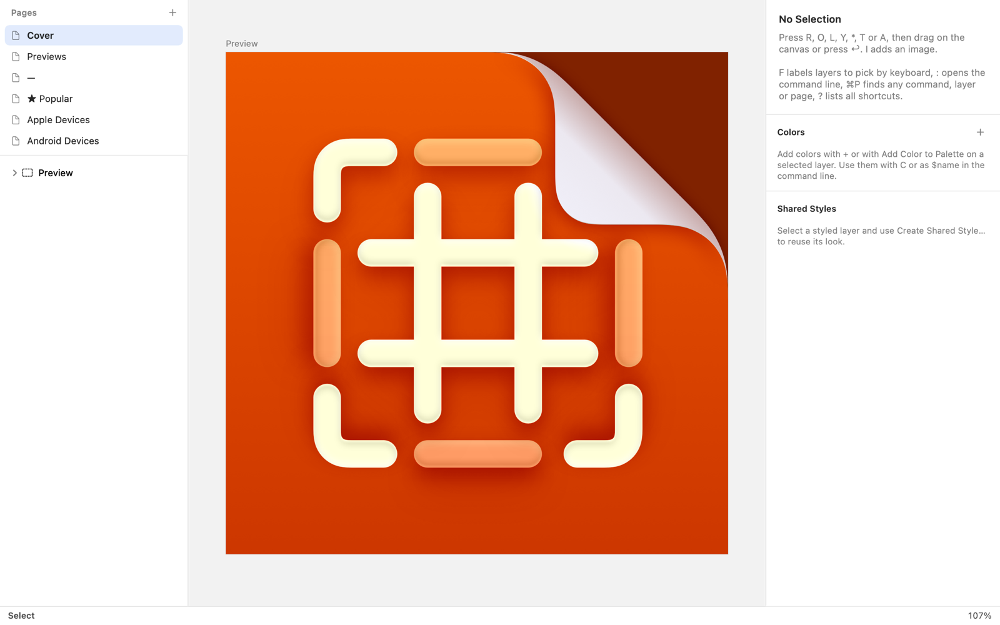
Figma
File → Import from Figma… (⌃⌘O) asks for a file link and a personal access token
(Figma → Settings → Security → Personal access tokens, with read access to files). The token can be remembered in
~/.config/skica/figma-token, readable only by you; the FIGMA_TOKEN environment variable works too.
Frames, groups, vectors, text with its styles, image fills, components (as symbols) and instances with their text, color, visibility and swap overrides come along, as do auto layout (as stacks), constraints, effects and export settings. Instances of components from libraries that are not in the file arrive as groups.
16. The skica command
Homebrew installs it; otherwise use Skica → Install Command Line Tool…. It reads .skica, .sketch and .svg files.
skica list Design.skica # pages, artboards, export presets
skica export Design.skica -o out -f png -s 2x # every artboard
skica export Design.skica -a "Home" -a "Settings" -f svg # some artboards
skica export Design.skica -p "Icons" # artboards of one page
skica export Design.skica --exportables # marked layers, with their own sizes
skica export Design.skica --single-pdf Design.pdf # all artboards in one PDF
skica export Design.sketch -o out # straight from Sketch files
skica import Design.sketch Design.skica # convert Sketch or SVG files
skica import https://www.figma.com/design/KEY/Name Design.skica # needs FIGMA_TOKEN
skica shortcuts # every command and its keys
skica sample Sample.skica # a document to try things onFormats for -f: png, jpg, webp, heic, avif, pdf, svg. Sizes for -s: 2x, 0.5x, 512w, 300h.
17. Custom shortcuts
Shortcuts live in ~/.config/skica/keybindings.json. Choose a preset (sketch, the default, or figma)
and override single commands; only overrides are stored:
{
"preset": "figma",
"bindings": {
"zoomIn": ["cmd+="],
"goToPage": ["g p", "ctrl+p"]
}
}Keys are written as cmd, opt, ctrl, shift joined with +; a space separates the keys of a
sequence (g p). Command names are the identifiers in the table below (run skica shortcuts to list them with their keys).
Restart Skica after editing; problems with the file are reported at launch.
18. All shortcuts
The default (Sketch) shortcuts, and the Figma preset where it differs. Commands without a shortcut are in ⌘P.
| Command | Keys | Figma preset |
|---|---|---|
| Tools | ||
| Select Tool | V | |
| Rectangle | R | |
| Oval | O | |
| Line | L | |
| Polygon | Y | |
| Star | * | |
| Pen | P | |
| Text | T | |
| Artboard | A | F A |
| Image… | I | |
| Edit | ||
| Edit Size and Position… | = | |
| Delete | ⌫ ⌦ | |
| Duplicate | ⌘D | |
| Select All | ⌘A | |
| Rename | ⌘R | |
| Show/Hide | ⇧⌘H | |
| Lock/Unlock | ⇧⌘L | |
| Arrange | ||
| Bring Forward | ⌘] | |
| Send Backward | ⌘[ | |
| Bring to Front | ⌥⌘] | |
| Send to Back | ⌥⌘[ | |
| Group | ⌘G | |
| Ungroup | ⇧⌘G | |
| Add Stack | ⇧A | |
| Remove Stack | ⌥⇧A | |
| Align Left | ⌥A | |
| Align Horizontal Centers | ⌥H | |
| Align Right | ⌥D | |
| Align Top | ⌥W | |
| Align Vertical Centers | ⌥V | |
| Align Bottom | ⌥S | |
| Distribute Horizontally | ⌃⌥H | |
| Distribute Vertically | ⌃⌥V | |
| Selection | ||
| Select Next Layer | ⇥ | |
| Select Previous Layer | ⇧⇥ | |
| Select Inside / Edit Size | ↩ | |
| Back / Select Parent | esc | |
| Select by Label | F | G F |
| Add to Selection by Label | ⇧F | G ⇧F |
| Pages | ||
| New Page | ⌥⌘N | |
| Delete Page | ⌘P | |
| Rename Page | ⌘P | |
| Next Page | ⇟ | |
| Previous Page | ⇞ | |
| Go to Page… | G P | |
| Move Selection to Page… | G M | |
| Export | ||
| Export Selection… | ⇧⌘E | |
| Export All Marked Layers… | ⌥⇧⌘E | |
| Export Page as PDF… | ⌘P | |
| Copy as PNG | ⇧⌘C | |
| Copy as SVG | ⌥⇧⌘C | |
| Text | ||
| Bold | ⌘B | |
| Italic | ⌘I | |
| Underline | ⌘U | |
| Font… | ⌘T | |
| Vector | ||
| Edit Points | E | |
| Convert to Paths | ⇧⌘O | |
| Outline Stroke | ⌥⌘O | |
| Union | ⌥⌘U | |
| Subtract | ⌥⌘S | |
| Intersect | ⌥⌘I | |
| Difference | ⌥⌘X | |
| Mask | ⌃⌘M | |
| Symbols & Styles | ||
| Create Symbol… | ⌥⌘K | |
| Insert Symbol… | S | |
| Swap Symbol… | ⌘P | |
| Go to Symbol Master | G S | |
| Detach from Symbol | ⌥⌘B | |
| Reset Overrides | ⌘P | |
| Create Shared Style… | ⌘P | |
| Apply Shared Style… | ⇧⌘Y | |
| Update Shared Style from Layer | ⌘P | |
| Reset to Shared Style | ⌘P | |
| Detach from Shared Style | ⌘P | |
| Apply Color from Palette… | C | |
| Add Color to Palette | ⌘P | |
| View | ||
| Zoom In | ⌘= ⇧⌘+ | + ⌘= ⇧⌘+ |
| Zoom Out | ⌘- | - ⌘- |
| Actual Size | ⌘0 | ⌘0 ) |
| Zoom to Fit | ⌘1 | ⌘1 ! |
| Zoom to Selection | ⌘2 | ⌘2 @ |
| Show/Hide Layers | ⌥⌘1 | |
| Show/Hide Inspector | ⌥⌘2 | |
| Canvas Only | ⌘. | ⌘\ ⌘. |
| App | ||
| Go to Layers | G L | |
| Go to Inspector | G I | |
| Command Palette | ⌘P ⇧⌘P | |
| Actions for Selection | ⌘K | |
| Keyboard Shortcuts | ? | |
| Command Line | : | |
| Repeat Last Command | . | |
Mouse and modes
| Double-click | Into a group; edit text; edit points of a shape; crop an image; go to a symbol's master |
| ⌘-click | Select the deepest layer under the pointer |
| space + drag | Pan |
| ⇧ / ⌥ / ⌃ while dragging | Keep proportions / from the center / no snapping |
| Pen: click last point again | Next segment straight after a curve |
| Pen: ⌥-drag | Sharp turn between two curves |
| Drag rows in the layers list | Reorder; move into or out of groups and artboards |
| Drag a panel divider | Resize the layers list or the inspector |
19. Files and Quick Look
A .skica file is a zip archive with document.json (pages, layers, styles, symbols) and the images in
images/, named by their SHA-256 hash, so the same image is stored once. Documents save automatically, as in other Mac apps,
and keep a full undo history while open.
Finder shows thumbnails of .skica files, and the space bar opens a Quick Look preview of the first page. Both come from
extensions inside Skica.app; open the app once after installing so macOS registers them.